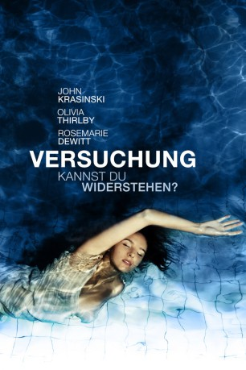

#8855 Versuchung - Kannst du widerstehen?
Alternativ: Nobody Walks
 
 IMDB-Wertung: 5.3 / 10
IMDB-Wertung: 5.3 / 10  Metascore: 0
Metascore: 0 
Martine, eine junge Künstlerin aus New York, zieht nach Los Angeles, wo sie im Poolhaus einer Familie eine Bleibe findet. Peter, der Familienvater, erklärt sich bereit, Martine bei ihrem Filmprojekt zu helfen. Martine bringt das scheinbar idyllische Leben dieser offenherzigen Familie gehörig durcheinander.
Jahr: 2012
Dauer: 82 Minuten
FSK: 12
Land: USA Studio: Magnolia PicturesTonspuren: DTS - ,
Untertitel:
Auflösung: 1080p (1920x1080) Größe: 5294 MB
Genre: Drama
Regisseur: Ry Russo-Young
Drehbuch: Lena Dunham
Soundtrack: Will Bates, Fall On Your Sword
Darsteller:
Datei: X:\2012(N-Z)\Versuchung - Kannst du widerstehen (2012, FSK12, 1920x1080).mkv seit 03.05.2018
Festplatte: HD 2012(N-Z)-2013(A-H)
 Es gibt insgesamt 138 Filme in der Gruppe '2012(N-Z)'
Es gibt insgesamt 138 Filme in der Gruppe '2012(N-Z)'